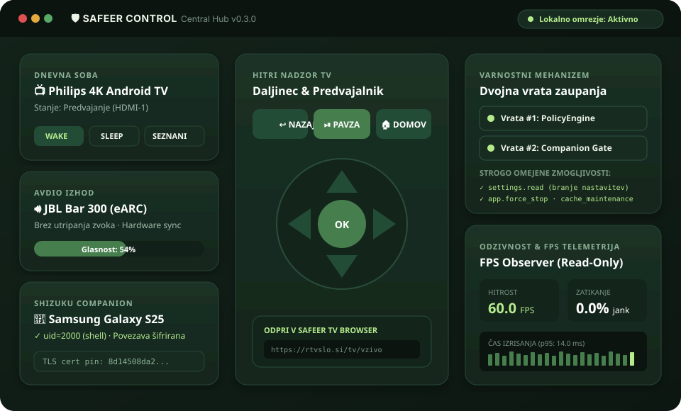

Nadzorno vozlišče na računalniku.
Osrednji strežnik s kratkotrajnimi sejami, REST API-jem, PolicyEngine preverjanjem ukazov in hitro spletno nadzorno ploščo.
Različica 0.3.0 · CLI & Hub Namestitev Hub-a ↓Sodobno, zasebno in kriptografsko nadzorno vozlišče. Upravljanje televizorjev, avdio sistemov in Android naprav brez posredovanja zunanjih oblakov — z dvojnimi vrati zaupanja (Dual Capability Gates) in Shizuku integracijo brez rootanja.
Popolnoma brezplačno. Brez naročnin, brez oblaka in brez skrite telemetrije.

Namensko prilagojene komponente za krmiljenje in naprave. Izberite ustrezen paket in prevzemite nadzor nad svojim lokalnim okoljem.
Osrednji strežnik s kratkotrajnimi sejami, REST API-jem, PolicyEngine preverjanjem ukazov in hitro spletno nadzorno ploščo.
Različica 0.3.0 · CLI & Hub Namestitev Hub-a ↓Android komponenta z neposredno Shizuku (uid=2000) povezavo, samodejnim zagonom ob rebootu ter Ed25519 varnim OTA posodabljanjem.
Različica 0.9.1 · APK Namestitev APK ↓Hermetično preveden ARM64/AMD64 demon za televizorje (Philips 4K TV) brez potrebe po APK ovoju, z varnim watchdog nadzorom.
Različica 0.9.1 · Go ARM64 Namestitev Go demona ↓Zaženite uradni enovrstični namestitveni skript, ki pripravi okolje, odvisnosti in ustvari ukaz safeer-control v vaši mapi ~/.local/bin:
curl -sSL http://localhost:8990/install.sh | bash
Ali neposredno iz GitHub repozitorija:
curl -sSL https://raw.githubusercontent.com/memelandfaner/safeer-control/main/scripts/install.sh | bash
safeer-control serve 8990safeer-control statussafeer-control observer fps --device <ip:port>Companion teče na telefonu kot neprekinjena Foreground storitev in komunicira s krmilnikom prek šifrirane TLS povezave z obojestransko PIN avtentikacijo:
Safeer-Companion.apk.uid=2000 shell).475121).safeer-control pair --device <ip:port> --pin 475121.Za naprave brez grafičnega APK vmesnika (Android TV, Philips televizorji ali vgrajeni predvajalniki):
# Prenos binarnega programa na napravo
adb push companion/bin/safeer-companion-android-arm64 /data/local/tmp/
adb shell chmod 0700 /data/local/tmp/safeer-companion-android-arm64
# Zagon demona v ozadju z nadzornikom
adb shell "nohup /data/local/tmp/safeer-companion-android-arm64 > /dev/null 2>&1 &"
Safeer Control je neposredno integriran z namenskim brskalnikom za Linux Mint in Android TV:
app.cache_maintenance.Namesto univerzalnih ali ranljivih rešitev Safeer Control temelji na dveh neodvisnih vratih zaupanja in popolnoma lokalni arhitekturi.
Ukaz najprej preveri PolicyEngine na krmilniku (Vrata #1), nato ločeni CapabilityGate na napravi (Vrata #2). Dovoljene so le 3 strogo definirane operacije: branje nastavitev, zaustavitev aplikacije in vzdrževanje predpomnilnika. Poljubna lupina (shell) je matematično izključena.
Seznanitev poteka prek 6-mestnega PIN-a z izpeljavo 256-bitnega HKDF ključa, obojestransko potrditvijo transkripta seje in pripenjanjem SHA-256 prstnega odtisa certifikata. MITM napadi so ob prvem stiku zanesljivo preprečeni.
Vse komponente tečejo v vašem domačem omrežju (LAN). Nobenih zunanjih strežnikov, nobenih naročnin in nobenih žetonov v konzolah ali URL-jih. Delovanje je v celoti fail-closed: ob najmanjšem odstopanju se povezava varno prekine.
Vnesite poljuben 6-mestni PIN in si oglejte, kako se z uporabo soli in SHA-256 HKDF funkcije izpelje močan 256-bitni simetrični ključ seje:
uid=2000 shell), kar ohranja varnost in tovarniško garancijo naprave. Ob izpadu Shizuku demon varno vrne HTTP 503 brez sesutja.Ne. Za prenos, namestitev in uporabo ne potrebujete nobenega računa ali naročnine. Vsa programska oprema je brezplačna in odprtokodna pod licenco Apache 2.0.
Ne. Safeer Companion se povezuje prek uveljavljene rešitve Shizuku (raven uid=2000 prek lokalnega ADB protokola). Root ni potreben in varnostni model Androida ostaja neokrnjen.
Protokol V0.8.1 ob prvem stiku prek kratkotrajnega PIN-a izpelje sejne ključe z metodo HKDF-SHA256, izmenja kriptografska dokazila o celotnem transkriptu ter nemudoma pripne SHA-256 prstni odtis TLS certifikata (certificate pinning). Tudi če napadalec nadzoruje lokalni Wi-Fi, povezave ne more prestreči ali ponarediti.
FPS Observer je strogo izolirana, samo-bralna diagnostična komponenta. Pasivno prebira metrike osveževanja zaslona in zakasnitve izrisovanja sličic, pri čemer nima nobenega dostopa do ključev, Shizuku jedra ali ukaznih vrat.